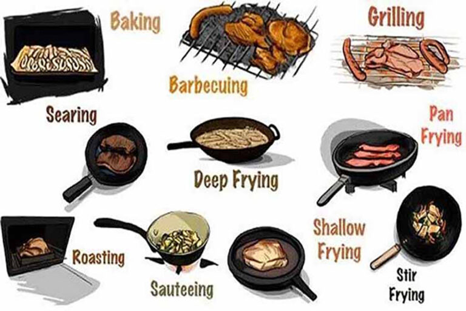
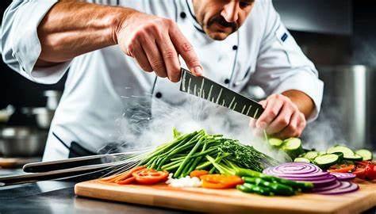

Cooking Tips
Basic Techniques
Learn the essential cooking techniques that every home cook should know. From chopping vegetables to searing meat, these tips will help you become more confident in the kitchen.
- Knife Skills: Master basic chopping, dicing, and slicing techniques.
- Searing Meat: Learn how to achieve a perfect crust on meats while keeping them tender.
- Making Stock: Create a flavorful base for soups and sauces.
Advanced Techniques
Take your cooking skills to the next level with these advanced techniques. Learn how to make homemade pasta, perfect your baking skills, and more.
- Homemade Pasta: Craft fresh pasta from scratch with simple ingredients.
- Sous Vide Cooking: Cook foods to precise temperatures for perfect results.
- Advanced Baking: Master techniques for laminated doughs like croissants and puff pastry.
Kitchen Tools
Discover the must-have kitchen tools that will make your cooking experience more enjoyable. From high-quality knives to versatile cookware, these tools are essential for any home cook.

- Chef's Knife: An essential tool for most kitchen tasks.
- Cast Iron Skillet: Perfect for searing, baking, and frying.
- Stand Mixer: A versatile appliance for baking and mixing.
Ingredient Substitutions
Learn how to make ingredient substitutions in your recipes. Whether you're out of a specific ingredient or looking for a healthier alternative, these tips will help you make the perfect swap.
- Buttermilk Substitute: Use milk with a tablespoon of lemon juice or vinegar.
- Egg Replacement: For baking, use mashed bananas or applesauce.
- Flour Alternatives: Try almond flour or coconut flour for gluten-free options.